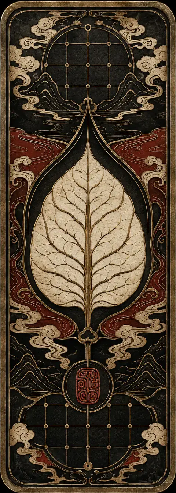

起点
无名叶市
旧谱流通之地，所有故事都从一场不明来历的牌局开始。
THE WORLD OF YEXIPU
传说世间万事，皆曾被记在一部《叶戏谱》中。后来谱页散佚，旧事失名，人的命运也随之变得残缺。
玩家将成为一名“拾叶人”，踏入由牌局维系秩序的城镇与山野。你手中的每张叶牌，既是招式、筹码，也是某段往事的证词。赢下一局，只是开始；辨明牌背后的真相，才是旅途真正的目的。
人争一时输赢，叶记百年兴亡。
旧谱流通之地，所有故事都从一场不明来历的牌局开始。
不同流派守着各自的规则，也守着不愿被翻开的旧事。
当散叶重聚，玩家必须决定哪一种历史应被写进新谱。
GAMEPLAY
易于入局，难于穷尽。规则强调“手牌经营、谱系组合与角色抉择”三层策略，让每次出牌都同时作用于战局与故事。
从有限手牌中识别牌势、安排出牌顺序。每一次取舍都会改变牌局的走向。
把单张叶牌编入谱系，触发同源、相生与逆转效果，形成属于你的连锁打法。

牌势谱系抉择不同角色拥有独立的局外能力与叙事线索，让同一副牌衍生出完全不同的解法。
牌局结果会被记录为新的谱页。胜负之外，你也在逐步拼出这个世界被抹去的历史。
CHARACTER CARDS
每位角色都带着一段缺页的过去进入牌局。角色身份会改变你的起手、局外选择与可见线索。
鼠标悬停或点击卡牌，翻阅角色正面善于调序与借牌，以局破局。
辨认散落残页，预见故事的另一条分支。
守住最后一叶，在残局中夺回先机。
首批角色牌面为概念展示，技能数值与最终造型将随游戏开发继续完善。
ROADMAP
官网已经为版本公告、更新补丁、新角色档案与玩家社区入口预留位置。项目进展将按真实开发节奏逐步公开。
基础回合、牌型判断与胜负流程
首批叶牌、角色立绘与核心界面
角色事件、谱页收集与世界线索
新角色、新牌组与主题章节持续扩展